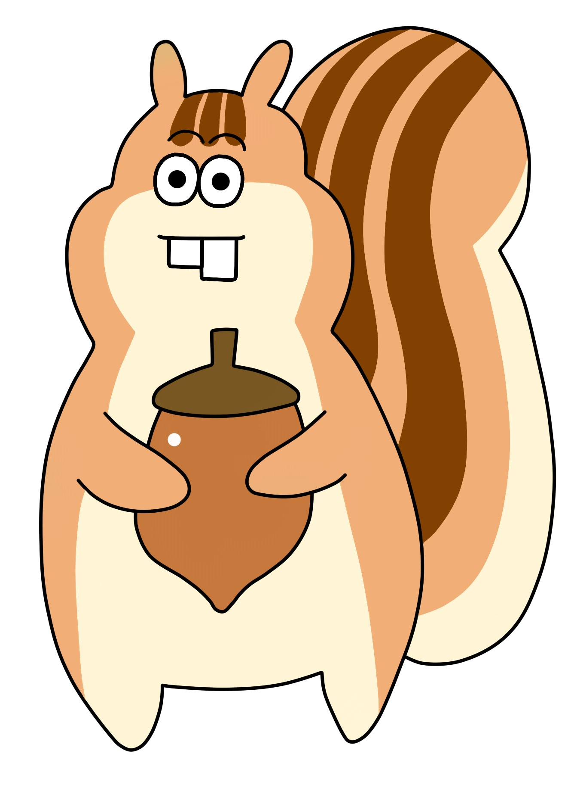

365일
5월 25일
This is heading 1
This is heading 2
This is heading 3
This is heading 4
This is heading 5
This is heading 6

원작 고증에 충실하다.
영화에서 다루는 대부분의 씬이 모두 원작에서 나오는 장면들이지만, 마치 가 자매들의 과거와 현재를 오가는 교차편집이 빈번하여 원작을 모르는 입장에서는 혼란이 가중될 수 있다.
첫째 딸 메그의 경우 영화 초반부터 누군가의 아내가 된 모습으로 등장하기 때문에, 소녀 시절 화려한 사교계에 로망을 갖고 있던 그녀가 결국 꿈보다 사랑을 택하게 되었다는 것을 보여주며 그 상대가 누구인지도 전혀 숨김이 없다.
메그와 존 브룩의 러브라인이 소설보다도 적나라한 편. 조와 에이미의 경우에도 7년 후 시점에 누구와 만나고 있는지 초장부터 다 보여주기 때문에, 원작을 모르면 일종의 스포일러를 당할 수 있으니 주의.
원작 소설보다 그 시대적 여성의 입지와 한계에 대한 묘사가 뚜렷하며[4], 그를 극복하고자 고군분투하는 마치 가의 자매들 그 가운데서도 조의 갈등과 성장이 두드러진다. 사교계에서 화려한 드레스를 입고 무도회를 즐기고 싶은 허영을 버리고 가난한 남자와 결혼해 '아내'와 '어머니'로서 살아가는 첫째 딸 메그. 여성의 사회적 활동 기회가 좁다 못해 한정적이었던 그 시대에서 작가로서 자립하려는 둘째 딸 조. 현실에 부딪혀 유럽 프랑스에서 화가로 살려던 자신의 꿈을 버리고, 부유한 남자와 결혼하려다 결국 자신의 사랑을 택한 막내 딸 에이미에 이르기까지 병약하여 일찍 죽은 베스를 제외한 마치 가 자매들이 각각의 행복을 찾아가는 과정이 그려진다.